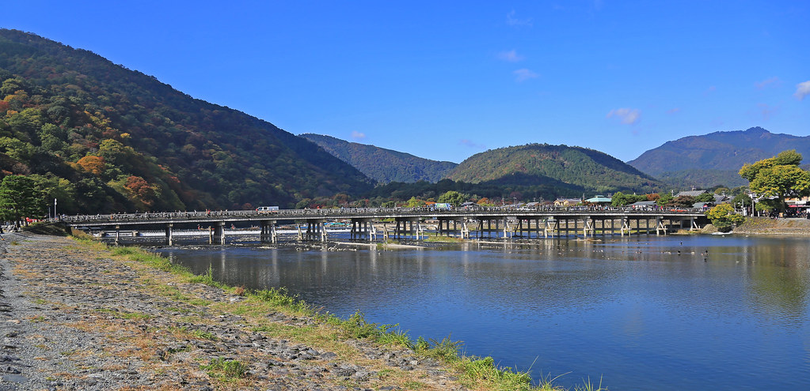

Arashiyama

Situé à l’ouest de Kyoto, le quartier d’Arashiyama est l’un des lieux les plus emblématiques de la ville. Réputé pour sa célèbre forêt de bambous, il séduit par son atmosphère paisible où nature et traditions japonaises se rencontrent harmonieusement.
Entre temples historiques, jardins soignés et le pont Togetsukyō qui enjambe la rivière Katsura, Arashiyama offre des paysages magnifiques en toute saison, particulièrement lors de la floraison des cerisiers au printemps et des érables rouges à l’automne. Ancien lieu de villégiature de la noblesse impériale, le quartier invite à la promenade et à la contemplation.
Arashiyama est une destination incontournable pour découvrir un Kyoto plus naturel, authentique et apaisant.